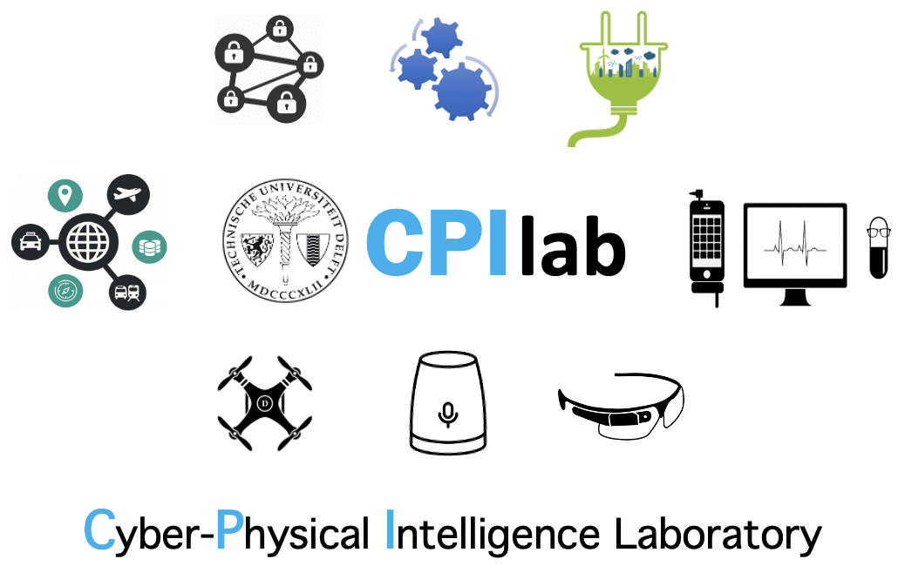

CPI won prestigious
EU Marie Curie ITN
(€4M, 2020-2024) to innovate on Approximate Edge Intelligence
CPI is hosting
ACM EdgeSys 2021
, Edinburgh, UK
CPI won 4TU funding for new
Lorentz Workshop on Edge Computing
CPI won
Best Paper Award
at ACM SenSys CCIoT